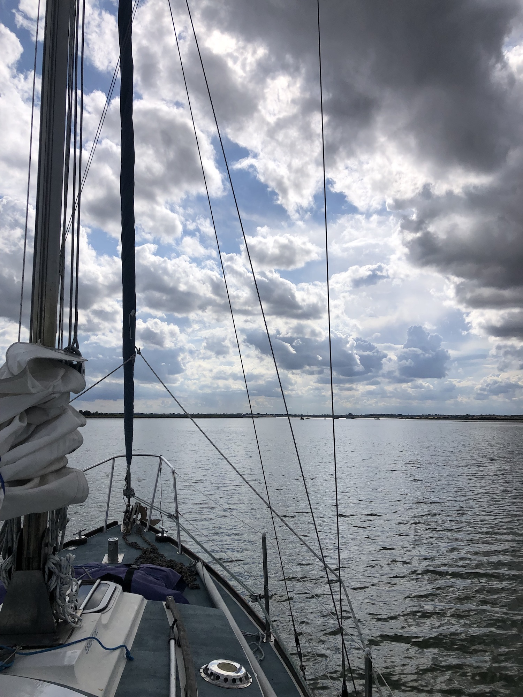
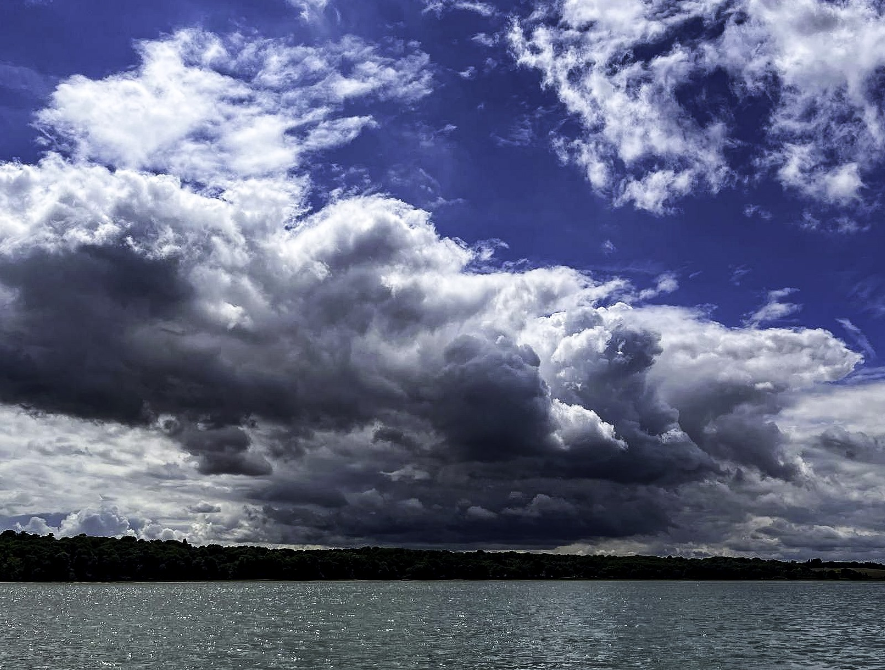
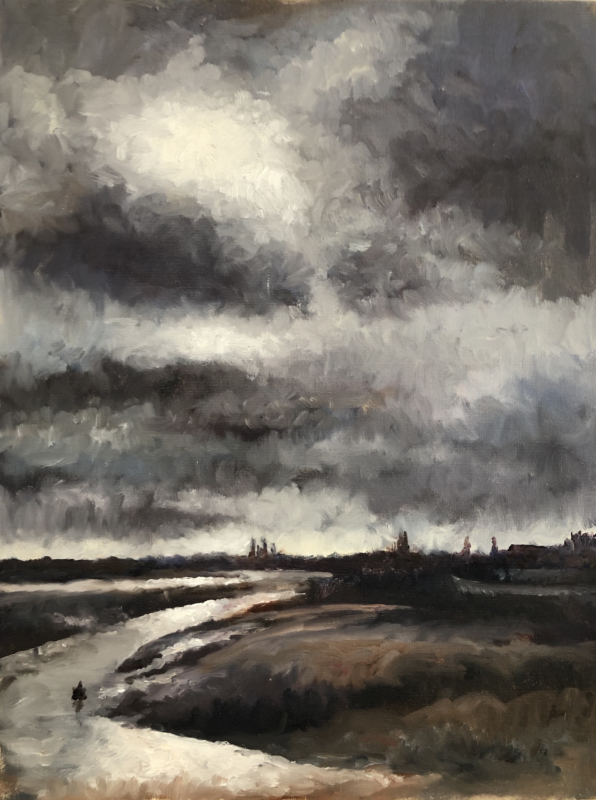

The majestic power of clouds

Cumulonimbus build fast above the water in front of us. These clouds can be 50 miles away but seem much nearer as they rise easily 5 miles in the air. They grow quickly - great shapes rising and billowing up to flat tops, changing constantly as we look. They will bring weather of course, not necessarily to us but certainly to someone. In this wide sea individual squalls or storms are clearly visible underneath the towering clouds - often in several places at once, some nearer some further. There’s rain there too, lots of it. Someone or something is getting wet.
Around these huge majestic clouds there are smaller, fleeting, more horizontal clouds often well lower and seemingly going on their own way, like two different dances in the air, perhaps these are driven by more local winds. They are more delicate, less grand and certainly less threatening. The sky is a complex series of layers - vertically and horizontally over distance - there is a lot going on. The clouds are of course both indicators and the creators of wind.
There are thermals rising beneath these mighty forms. Locally the wind will increase as it rushes to fill the space left by the rising air. As we sail in and out from under the clouds the wind shifts and strengthens interacting with the clouds above us. If only we could interpret better what is happening I am sure we would be able to sail better. Clouds are the nearest we get to actually seeing the wind, albeit only where the precise mix of air and moisture produces the miraculous stuff that is a cloud, dense yet translucent and laden with future precipitation. And watching these clouds we can see that wind is moving in many directions, upwards, downwards, from low to high pressure and from low to high temperatures, often very locally. Weather systems may be moving west to east but the wind within and, particularly important for us below the clouds, might be moving in any number of directions.
We are taught to read clues from the clouds, the approaching and passing of fronts and the coming of sudden rains and squalls. But it is seldom categorically clear what is going on. I have looked at, photographed and painted clouds for many years and I still get it wrong. And aren't those guide books full of photographs of clouds difficult to use? Best perhaps to just keep on looking at the real thing. But the experts and very experienced sailors can glean a lot of information from clouds and to some extent can see ahead, e.g. "red sky at night - sailors delight" suggesting high pressure coming in from the west. Dawn and dusk clouds are special too - the rising and setting sun fleetingly lighting the underside of the clouds then filling them with light. And of course the difference between dawn and dusk is profound. It is not just about looking at activity in the east or west but something else to do with the way we see the clouds change with growing or diminishing light.
The clouds inevitably dominate our view when sailing, (unless we are very lucky with the weather), but we still can't navigate by the clouds, they move about too much, grow and shrink and can be deceptively far away or nearby. There is a lot to this and a lot more to learn....

